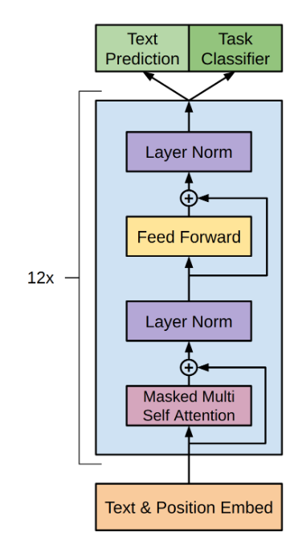

Binary Cross-Entropy? Logits? An Intuitive Perspective
Ever had to check the pytorch documentation for BCEWithLogitsLoss, and thought "ok, but what is a logit actually?" And "why use binary-cross-entropy?" Or, "why 'entropy', even?".
This is an attempt at getting to an answer for those questions, in what I hope to be an intuitive and relatable way.
Information Theory Actually Matters
Because these concepts are often presented in very terse, mathematical and theoretical ways,
we can often assume that they are in the domain of things academics care a lot about (like quarks, the riemann hypothesis, or cutting cake),
and not in the domain of actually useful things (like interest rates, phone cameras, and artillery ballistics).
But I find it important to remember that information theory originated during WWII,
not just as a complicated theory to keep academics busy, but as a very real and very important tool which can be used for things like code-breaking,
or for deciding where to strike, and where to feign ignorance, in order to avoid letting the enemy know that their codes were broken.
A Practical Example
This post by gwern uses information theory to analyse the the story of death note,
in which a teenager with a supernatural notebook is eliminating people while a super-smart detective tries to find out who he is,
https://gwern.net/death-note-anonymity
I think that it makes for a great intuitive example of information entropy, so I'll re-use it here.
Entropy?
Imagine having never heard the word entropy before, but wanting to be able to answer questions like:
how much 'closer' is L to finding me if he learns this fact vs. if he learns that fact?
One way to do this in a comparable way is to find a function, or a measure, of how 'certain' L is about knowing things.
Distributions, Beliefs
When L thinks that Light is in Japan, what does that mean?
One way to formalize beliefs is to consider them as probability distributions over possible 'truths'
IMAGE OF A PROBABILITY DISTRIBUTION
AARON ALICE .... LIGHT --> all people
Certainty can be Quantified!
We're looking for a function (H) that, given a probability distribution in L's mind, returns a single number (or score),
where that number is highest when L has absolutely no idea who the killer could be (1/N probability on every person on earth),
and is lowest when L is absolutely certain that a single person is the killer.
Then, we could for example consider two outcomes, for example (L learns that Light is male, vs L learns that Light has brown hair), and compare the scores.
Now, before deciding between two stratagems, we could select the one that we expect gets the highest score, meaning that L gains the least amount of certainty.
Bits?
Why bits?
Say we're looking for a score, or a measure of how much information is gained or lost.
Cross-Entropy
But wait! If you've been paying attention, you might have noticed that the scoring function which I said we should use, 'Entropy',
spits out the same value whether L is absolutely certain that Light is Kira, or some other random person Bob:
in both case, the entropy is 0. But in the first case, Light goes to prison, whereas in the second case, Bob goes to prison and Light gets home free.
So it seems that, as useful as Entropy is in assessing 'certainty', it's not a great function for deciding whether L is closer to the truth, or not.
We'll need a new function for that.
Ideally, we want this function to score things roughly like so:
1) 0 score if L is absolutely certain that Light is Kira,
2) some higher score if L is absolutely uncertain about who Kira could be
3) some even higher score if L is absolutely certain that some innocent is Kira.
Entropy gives us 1) and 2), but not 3).
The mysterious wise cloaked person approaches again and says: how about trying this function:
p* log(p)
Binary Cross-Entropy
Why _Binary_ Cross-Entropy?
Actually, just cross-entropy would be fine to use anywhere you use binary cross-entropy,
binary cross-entropy is simply a special case where there are only two possibilities worth considering
p and not-p
in which case, whatever probability we assume to p, not p will be 1 minus that.
If we use the cross-entropy function, we need to feed both probabilities
Neural Networks?
What does all of this have to do with neural Networks?
it turns out that a function that is good for scoring how 'close to truth' some process is a good target for optimizing data-driven models.
For a network to minimize this loss, it needs to be as certain as possible about things that are true, but prefer uncertainty to being wrong.
Logits
If the model outputs are fed directly to the CE function, you can consider those outputs as probabilities, which should be between 0 and 1.
For example, imagine a neural-network version of L, which takes as input all the FBI files on some crime, and outputs the distribution of probabilities for each suspect:
0.1 0.2 ... 0.6
Aaron Alice Light
Then given this output distribution, you can calculate the cross entropy and gradient descend the weights to improve its guess.
For modern artificial neural networks, every time you run this, internally the model first computes some layer output y = Ax + B
where y can be any value between -inf and +inf, then must apply a softmax function to convert it to a probability distribution.
Then, in the cross entropy function, we calculate the log of the probability, to obtain the score.
So we end up doing
log(exp(Ax + B) / sum(exp(Ax + B)))
When doing this step by step, the exponents can explode or vanish.
To make this process more numerically stable, we could instead take the Ax + B output directly as input to the cross-entropy function,
which allows using the log-sum-exp trick (https://gregorygundersen.com/blog/2020/02/09/log-sum-exp/).
Logits is the term that is used to refer to this 'raw' y = Ax + B output, before applying the softmax function.
[Why is there an exponential in softmax?] https://datascience.stackexchange.com/questions/23159/in-softmax-classifier-why-use-exp-function-to-do-normalization
What is the 'Correct' Loss Function?
One thing I hope you take away from this, is a new intuitive perspective on these concepts.
But, while Binary-cross Entropy is a very useful function, it's not the 'universally true' way to score all things.
In many cases, it might be a better idea to go for L1 or L2 loss, or some other function when optimizing a model,
for example when you want the outputs to explicitely behave like distances, or when you want outputs to have specific properties like sharpness.
An important point about entropy-based loss functions is that using them means that _if_ everything else works properly, it should nudge the model outputs towards
behaving like actual probabilities, which can be a very useful property, _if_ that's what you need.
Probabilities obey rules like "summing to 1 for all outcomes", "probability of two events happening is less or equal to the probability of either of them happening independently", and so on.
PLANECRASH probabilities from scratch
